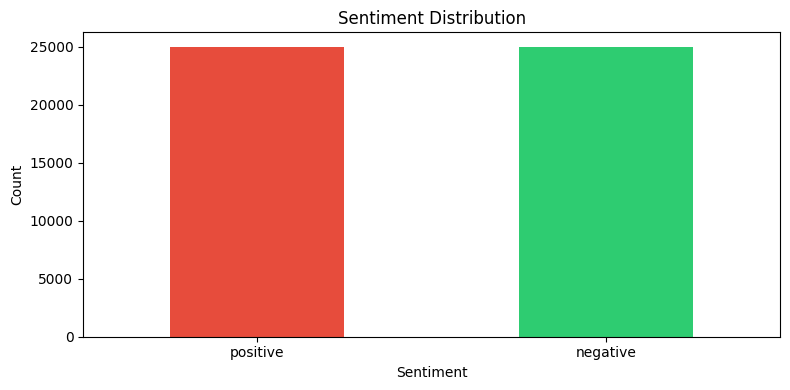
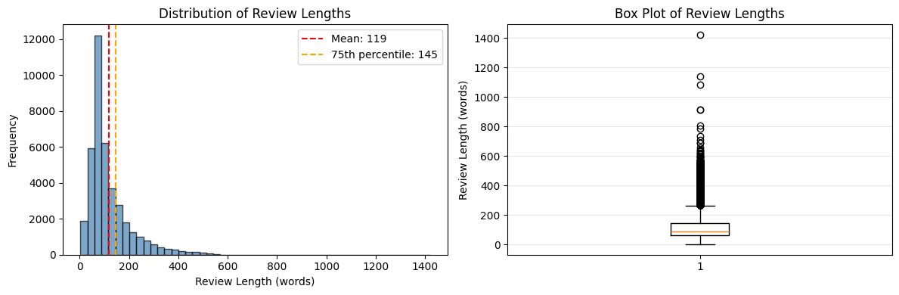
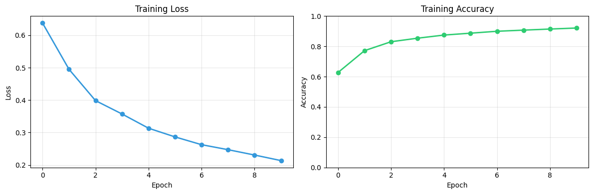

Aim: Train a Recurrent Neural Network (RNN) on the IMDB large movie review dataset for sentiment analysis. Pratham Goyal A2345924079 4CSE-2eve
This notebook demonstrates sentiment analysis using Recurrent Neural Networks (LSTM) on the IMDB movie review dataset. We build an LSTM model to classify reviews as positive or negative sentiment.
Topics covered:
!pip install wandb
import wandb
from dotenv import load_dotenv
import os
load_dotenv('/kaggle/input/env2nd/.env')
print(f"API key found in environment? {os.getenv('WANDB_API_KEY') is not None}")
# wandb.login()
if wandb.login():
print("Successfully logged in to Weights & Biases!")
else:
print("Failed to log in to Weights & Biases. Check your API key in the .env file.")Requirement already satisfied: wandb in /usr/local/lib/python3.12/dist-packages (0.22.2)
Requirement already satisfied: click>=8.0.1 in /usr/local/lib/python3.12/dist-packages (from wandb) (8.3.1)
Requirement already satisfied: gitpython!=3.1.29,>=1.0.0 in /usr/local/lib/python3.12/dist-packages (from wandb) (3.1.45)
Requirement already satisfied: packaging in /usr/local/lib/python3.12/dist-packages (from wandb) (26.0rc2)
Requirement already satisfied: platformdirs in /usr/local/lib/python3.12/dist-packages (from wandb) (4.5.1)
Requirement already satisfied: protobuf!=4.21.0,!=5.28.0,<7,>=3.19.0 in /usr/local/lib/python3.12/dist-packages (from wandb) (5.29.5)
Requirement already satisfied: pydantic<3 in /usr/local/lib/python3.12/dist-packages (from wandb) (2.12.5)
Requirement already satisfied: pyyaml in /usr/local/lib/python3.12/dist-packages (from wandb) (6.0.3)
Requirement already satisfied: requests<3,>=2.0.0 in /usr/local/lib/python3.12/dist-packages (from wandb) (2.32.5)
Requirement already satisfied: sentry-sdk>=2.0.0 in /usr/local/lib/python3.12/dist-packages (from wandb) (2.42.1)
Requirement already satisfied: typing-extensions<5,>=4.8 in /usr/local/lib/python3.12/dist-packages (from wandb) (4.15.0)
Requirement already satisfied: gitdb<5,>=4.0.1 in /usr/local/lib/python3.12/dist-packages (from gitpython!=3.1.29,>=1.0.0->wandb) (4.0.12)
Requirement already satisfied: annotated-types>=0.6.0 in /usr/local/lib/python3.12/dist-packages (from pydantic<3->wandb) (0.7.0)
Requirement already satisfied: pydantic-core==2.41.5 in /usr/local/lib/python3.12/dist-packages (from pydantic<3->wandb) (2.41.5)
Requirement already satisfied: typing-inspection>=0.4.2 in /usr/local/lib/python3.12/dist-packages (from pydantic<3->wandb) (0.4.2)
Requirement already satisfied: charset_normalizer<4,>=2 in /usr/local/lib/python3.12/dist-packages (from requests<3,>=2.0.0->wandb) (3.4.4)
Requirement already satisfied: idna<4,>=2.5 in /usr/local/lib/python3.12/dist-packages (from requests<3,>=2.0.0->wandb) (3.11)
Requirement already satisfied: urllib3<3,>=1.21.1 in /usr/local/lib/python3.12/dist-packages (from requests<3,>=2.0.0->wandb) (2.6.3)
Requirement already satisfied: certifi>=2017.4.17 in /usr/local/lib/python3.12/dist-packages (from requests<3,>=2.0.0->wandb) (2026.1.4)
Requirement already satisfied: smmap<6,>=3.0.1 in /usr/local/lib/python3.12/dist-packages (from gitdb<5,>=4.0.1->gitpython!=3.1.29,>=1.0.0->wandb) (5.0.2)
/usr/local/lib/python3.12/dist-packages/pydantic/_internal/_generate_schema.py:2249: UnsupportedFieldAttributeWarning: The 'repr' attribute with value False was provided to the `Field()` function, which has no effect in the context it was used. 'repr' is field-specific metadata, and can only be attached to a model field using `Annotated` metadata or by assignment. This may have happened because an `Annotated` type alias using the `type` statement was used, or if the `Field()` function was attached to a single member of a union type.
warnings.warn(
/usr/local/lib/python3.12/dist-packages/pydantic/_internal/_generate_schema.py:2249: UnsupportedFieldAttributeWarning: The 'frozen' attribute with value True was provided to the `Field()` function, which has no effect in the context it was used. 'frozen' is field-specific metadata, and can only be attached to a model field using `Annotated` metadata or by assignment. This may have happened because an `Annotated` type alias using the `type` statement was used, or if the `Field()` function was attached to a single member of a union type.
warnings.warn(
wandb: Currently logged in as: prathamgoyal7411 (v8god-01) to https://api.wandb.ai. Use `wandb login --relogin` to force relogin
API key found in environment? True
Successfully logged in to Weights & Biases!
# wandb.init(
# project="IMDB-Sentiment-Analysis",
# name="LSTM-Binary-Classifier",
# config={
# "epochs": EPOCHS,
# "batch_size": BATCH_SIZE,
# "learning_rate": LEARNING_RATE,
# "optimizer": optimizer.__class__.__name__,
# "loss_function": "BCELoss",
# "model": model.__class__.__name__
# }
# )Load required packages for NLP, deep learning, and visualization.
# ============================================================================
# IMPORTS - Core Libraries
# ============================================================================
import torch
import torch.nn as nn
import torch.optim as optim
from torch.utils.data import DataLoader, TensorDataset
# from torchsummary import summary
from torchinfo import summary
import pandas as pd
import numpy as np
import matplotlib.pyplot as plt
import seaborn as sns
from nltk.corpus import stopwords
from sklearn.model_selection import train_test_split
import nltk
import re
import warnings
warnings.filterwarnings('ignore')
# Download NLTK data
nltk.download('stopwords', quiet=True)
# Device configuration
DEVICE = torch.device('cuda' if torch.cuda.is_available() else 'cpu')
print(f"Using device: {DEVICE}")
# Set random seeds for reproducibility
torch.manual_seed(42)
np.random.seed(42)Using device: cuda
Load the IMDB movie review dataset.
import os
print("Current working directory:")
print(os.getcwd())
print("\nFiles in current directory:")
print(os.listdir())Current working directory:
/kaggle/working
Files in current directory:
['__notebook__.ipynb']
# ============================================================================
# LOAD DATASET
# ============================================================================
print("Loading IMDB dataset...")
# Load CSV file - ensure it's in the working directory
# data = pd.read_csv('./IMDB_Dataset.csv')
data = pd.read_csv('/kaggle/input/datasets/lakshmi25npathi/imdb-dataset-of-50k-movie-reviews/IMDB Dataset.csv')
# data = pd.read_csv('/kaggle/input/imdb-dataset-of-top-1000-movies-and-tv-shows/imdb_top_1000.csv')
print(f"Dataset shape: {data.shape}")
print(f"\nFirst few rows:")
print(data.head())
print(f"\nDataset info:")
print(data.info())
# Check class distribution
print(f"\nClass distribution:")
print(data['sentiment'].value_counts())
# Visualize
plt.figure(figsize=(8, 4))
data['sentiment'].value_counts().plot(kind='bar', color=['#e74c3c', '#2ecc71'])
plt.title('Sentiment Distribution')
plt.ylabel('Count')
plt.xlabel('Sentiment')
plt.xticks(rotation=0)
plt.tight_layout()
plt.show()Loading IMDB dataset...
Dataset shape: (50000, 2)
First few rows:
review sentiment
0 One of the other reviewers has mentioned that ... positive
1 A wonderful little production. <br /><br />The... positive
2 I thought this was a wonderful way to spend ti... positive
3 Basically there's a family where a little boy ... negative
4 Petter Mattei's "Love in the Time of Money" is... positive
Dataset info:
<class 'pandas.core.frame.DataFrame'>
RangeIndex: 50000 entries, 0 to 49999
Data columns (total 2 columns):
# Column Non-Null Count Dtype
--- ------ -------------- -----
0 review 50000 non-null object
1 sentiment 50000 non-null object
dtypes: object(2)
memory usage: 781.4+ KB
None
Class distribution:
sentiment
positive 25000
negative 25000
Name: count, dtype: int64

Set up stop words and cleaning utilities.
# ============================================================================
# PREPROCESSING SETUP
# ============================================================================
import nltk
from nltk.corpus import stopwords
# Load English stop words
english_stops = set(stopwords.words('english'))
print(f"Number of stop words: {len(english_stops)}")
print(f"Sample stop words: {list(english_stops)[:20]}")
def clean_review(review):
"""
Clean review text through multiple preprocessing steps
Steps:
1. Remove HTML tags
2. Remove non-alphabetic characters
3. Convert to lowercase
4. Remove stop words
Args:
review: Raw review text
Returns:
Cleaned review as list of words
"""
# Remove HTML tags
review = re.sub(r'<.*?>', '', review)
# Remove non-alphabetic characters
review = re.sub(r'[^a-zA-Z\s]', '', review)
# Convert to lowercase and split
review = review.lower().split()
# Remove stop words
review = [word for word in review if word not in english_stops]
return review
# Test on a sample
sample_review = data['review'].iloc[0]
print(f"\nOriginal review (first 100 chars):\n{sample_review[:100]}...")
print(f"\nCleaned review: {clean_review(sample_review)[:20]}")Number of stop words: 198
Sample stop words: ['how', 'themselves', 'if', 'needn', 'which', 'having', 'very', 'aren', 'doesn', 'no', "you'll", 'o', 'will', 'had', 'once', 'so', 'are', 'most', 'until', 'an']
Original review (first 100 chars):
One of the other reviewers has mentioned that after watching just 1 Oz episode you'll be hooked. The...
Cleaned review: ['one', 'reviewers', 'mentioned', 'watching', 'oz', 'episode', 'youll', 'hooked', 'right', 'exactly', 'happened', 'methe', 'first', 'thing', 'struck', 'oz', 'brutality', 'unflinching', 'scenes', 'violence']
Clean all reviews and prepare for tokenization.
# ============================================================================
# DATA CLEANING AND PREPARATION
# ============================================================================
print("Cleaning reviews...")
# Create copies for processing
x_data = data['review'].copy()
y_data = data['sentiment'].copy()
# Clean reviews
x_data_clean = x_data.apply(clean_review)
print(f"Cleaned {len(x_data_clean)} reviews")
print(f"\nSample cleaned reviews:")
for i in range(2):
print(f" Review {i+1}: {' '.join(x_data_clean.iloc[i][:20])}...")
# Encode sentiments: positive=1, negative=0
y_data_encoded = (y_data == 'positive').astype(int)
print(f"\nEncoded sentiments:")
print(f" Positive (1): {(y_data_encoded == 1).sum()}")
print(f" Negative (0): {(y_data_encoded == 0).sum()}")Cleaning reviews...
Cleaned 50000 reviews
Sample cleaned reviews:
Review 1: one reviewers mentioned watching oz episode youll hooked right exactly happened methe first thing struck oz brutality unflinching scenes violence...
Review 2: wonderful little production filming technique unassuming oldtimebbc fashion gives comforting sometimes discomforting sense realism entire piece actors extremely well chosen...
Encoded sentiments:
Positive (1): 25000
Negative (0): 25000
Divide dataset into training and testing sets.
# ============================================================================
# TRAIN-TEST SPLIT
# ============================================================================
print("Splitting dataset...")
x_train, x_test, y_train, y_test = train_test_split(
x_data_clean, y_data_encoded, test_size=0.2, random_state=42, stratify=y_data_encoded
)
print(f"Training set: {len(x_train)} samples")
print(f"Test set: {len(x_test)} samples")
print(f"\nTrain set class distribution:")
print(f" Positive: {(y_train == 1).sum()}")
print(f" Negative: {(y_train == 0).sum()}")Splitting dataset...
Training set: 40000 samples
Test set: 10000 samples
Train set class distribution:
Positive: 20000
Negative: 20000
Analyze word statistics to determine tokenizer parameters.
# ============================================================================
# VOCABULARY ANALYSIS
# ============================================================================
# Calculate review lengths
def get_review_lengths(reviews):
"""Calculate length of each review"""
return [len(review) for review in reviews]
train_lengths = get_review_lengths(x_train)
test_lengths = get_review_lengths(x_test)
print(f"Training set review lengths:")
print(f" Mean: {np.mean(train_lengths):.1f}")
print(f" Median: {np.median(train_lengths):.1f}")
print(f" Max: {np.max(train_lengths)}")
print(f" Min: {np.min(train_lengths)}")
print(f" Std Dev: {np.std(train_lengths):.1f}")
# Visualize length distribution
fig, axes = plt.subplots(1, 2, figsize=(12, 4))
axes[0].hist(train_lengths, bins=50, color='steelblue', alpha=0.7, edgecolor='black')
axes[0].set_xlabel('Review Length (words)')
axes[0].set_ylabel('Frequency')
axes[0].set_title('Distribution of Review Lengths')
axes[0].axvline(np.mean(train_lengths), color='red', linestyle='--',
label=f'Mean: {np.mean(train_lengths):.0f}')
axes[0].axvline(np.percentile(train_lengths, 75), color='orange', linestyle='--',
label=f'75th percentile: {np.percentile(train_lengths, 75):.0f}')
axes[0].legend()
axes[1].boxplot(train_lengths, vert=True)
axes[1].set_ylabel('Review Length (words)')
axes[1].set_title('Box Plot of Review Lengths')
axes[1].grid(axis='y', alpha=0.3)
plt.tight_layout()
plt.show()
# Determine padding length
max_length = int(np.ceil(np.mean(train_lengths)))
print(f"\nChosen max review length for padding: {max_length}")Training set review lengths:
Mean: 118.7
Median: 88.0
Max: 1420
Min: 3
Std Dev: 89.1

Chosen max review length for padding: 119
Convert text to numerical sequences and apply padding.
# ============================================================================
# TOKENIZATION AND PADDING
# ============================================================================
# Tokenizer setup
VOCAB_SIZE = 8000
MAX_LENGTH = 150 # Use 150 as max length
# Build vocabulary from training data
word_freq = {}
for review in x_train:
for word in review:
word_freq[word] = word_freq.get(word, 0) + 1
# Sort by frequency and create word_to_idx
sorted_words = sorted(word_freq.items(), key=lambda x: x[1], reverse=True)[:VOCAB_SIZE-1]
word_to_idx = {word: idx + 1 for idx, (word, _) in enumerate(sorted_words)}
word_to_idx['<oov>'] = 0 # Out of vocabulary token
print(f"Vocabulary size: {len(word_to_idx)}")
print(f"Max review length: {MAX_LENGTH}")
def texts_to_sequences(texts, word_to_idx):
"""Convert text to sequences of integers"""
sequences = []
for text in texts:
seq = [word_to_idx.get(word, 0) for word in text]
sequences.append(seq)
return sequences
def pad_sequences_manual(sequences, maxlen=MAX_LENGTH):
"""Pad or truncate sequences to fixed length"""
padded = np.zeros((len(sequences), maxlen), dtype=np.int32)
for i, seq in enumerate(sequences):
if len(seq) > maxlen:
padded[i] = seq[:maxlen]
else:
padded[i, -len(seq):] = seq
return padded
# Convert to sequences
print("Tokenizing reviews...")
x_train_seq = texts_to_sequences(x_train, word_to_idx)
x_test_seq = texts_to_sequences(x_test, word_to_idx)
# Pad sequences
print("Padding sequences...")
x_train_padded = pad_sequences_manual(x_train_seq, maxlen=MAX_LENGTH)
x_test_padded = pad_sequences_manual(x_test_seq, maxlen=MAX_LENGTH)
print(f"Padded training shape: {x_train_padded.shape}")
print(f"Padded test shape: {x_test_padded.shape}")
print(f"Sample sequence:\n{x_train_padded[0][:50]}") # Show first 50 tokensVocabulary size: 8000
Max review length: 150
Tokenizing reviews...
Padding sequences...
Padded training shape: (40000, 150)
Padded test shape: (10000, 150)
Sample sequence:
[0 0 0 0 0 0 0 0 0 0 0 0 0 0 0 0 0 0 0 0 0 0 0 0 0 0 0 0 0 0 0 0 0 0 0 0 0
0 0 0 0 0 0 0 0 0 0 0 0 0]
Prepare data for training with batching and shuffling.
# ============================================================================
# CREATE PYTORCH DATALOADERS
# ============================================================================
# Convert to tensors
x_train_tensor = torch.from_numpy(x_train_padded).long()
x_test_tensor = torch.from_numpy(x_test_padded).long()
y_train_tensor = torch.from_numpy(y_train.values).float()
y_test_tensor = torch.from_numpy(y_test.values).float()
# Create datasets
BATCH_SIZE = 128
train_dataset = TensorDataset(x_train_tensor, y_train_tensor)
test_dataset = TensorDataset(x_test_tensor, y_test_tensor)
# Create data loaders
train_loader = DataLoader(train_dataset, batch_size=BATCH_SIZE, shuffle=True)
test_loader = DataLoader(test_dataset, batch_size=BATCH_SIZE, shuffle=False)
print(f"Training batches: {len(train_loader)}")
print(f"Test batches: {len(test_loader)}")
print(f"Batch size: {BATCH_SIZE}")Training batches: 313
Test batches: 79
Batch size: 128
Define the LSTM architecture for sentiment analysis.
# ============================================================================
# LSTM SENTIMENT CLASSIFIER
# ============================================================================
class LSTMSentimentClassifier(nn.Module):
"""
LSTM-based Sentiment Classifier
Architecture:
- Embedding layer: Converts token indices to dense vectors
- LSTM layer: Processes sequences with long-term memory
- Dropout: Regularization to prevent overfitting
- Dense layers: Binary classification head
- Sigmoid: Output probability of positive sentiment
"""
def __init__(self, vocab_size, embedding_dim=32, lstm_hidden=64):
super(LSTMSentimentClassifier, self).__init__()
# Embedding layer: vocab_size -> embedding_dim
# padding_idx=0 to ignore padding tokens
self.embedding = nn.Embedding(vocab_size, embedding_dim, padding_idx=0)
# LSTM layer: embedding_dim -> lstm_hidden
self.lstm = nn.LSTM(embedding_dim, lstm_hidden, batch_first=True,
dropout=0.2)
# Classification head
self.fc1 = nn.Linear(lstm_hidden, 20)
self.relu = nn.ReLU()
self.dropout = nn.Dropout(0.25)
self.fc2 = nn.Linear(20, 1)
self.sigmoid = nn.Sigmoid()
def forward(self, x):
"""
Forward pass
Args:
x: Input token indices (batch_size, seq_length)
Returns:
Sentiment probability (batch_size, 1)
"""
# Embedding: (batch_size, seq_length) -> (batch_size, seq_length, embedding_dim)
embedded = self.embedding(x)
# LSTM: (batch_size, seq_length, embedding_dim) -> output, (h_n, c_n)
lstm_out, (hidden, cell) = self.lstm(embedded)
# Use the final hidden state for classification
hidden = hidden[-1] # (batch_size, lstm_hidden)
# Classification layers
out = self.fc1(hidden)
out = self.relu(out)
out = self.dropout(out)
out = self.fc2(out)
out = self.sigmoid(out)
return out
# Initialize model
model = LSTMSentimentClassifier(vocab_size=VOCAB_SIZE, embedding_dim=32,
lstm_hidden=64).to(DEVICE)
print("\n" + "="*70)
print("LSTM SENTIMENT CLASSIFIER ARCHITECTURE")
print("="*70)
try:
summary(model, input_size=(MAX_LENGTH,), device=DEVICE.type)
except:
print("Model created successfully!")
print(f"Total parameters: {sum(p.numel() for p in model.parameters()):,}")
======================================================================
LSTM SENTIMENT CLASSIFIER ARCHITECTURE
======================================================================
Model created successfully!
Total parameters: 282,409
Configure loss function and optimizer.
# ============================================================================
# TRAINING SETUP
# ============================================================================
# Loss function for binary classification
criterion = nn.BCELoss()
# Optimizer
learning_rate = 0.001
optimizer = optim.Adam(model.parameters(), lr=learning_rate)
print(f"Training configuration:")
print(f" Loss function: Binary Cross Entropy Loss")
print(f" Optimizer: Adam (lr={learning_rate})")
print(f" Device: {DEVICE}")
print(f" Batch size: {BATCH_SIZE}")Training configuration:
Loss function: Binary Cross Entropy Loss
Optimizer: Adam (lr=0.001)
Device: cuda
Batch size: 128
Execute the training loop.
# ============================================================================
# TRAINING LOOP
# ============================================================================
EPOCHS = 10
train_losses = []
train_accuracies = []
LEARNING_RATE = 0.001
print("\n" + "="*70)
print("TRAINING MODEL")
print("="*70 + "\n")
for epoch in range(EPOCHS):
wandb.init(
project="IMDB-Sentiment-Analysis",
name="LSTM-Binary-Classifier",
config={
"epochs": EPOCHS,
"batch_size": BATCH_SIZE,
"learning_rate": LEARNING_RATE,
"optimizer": optimizer.__class__.__name__,
"loss_function": "BCELoss",
"model": model.__class__.__name__
}
)
model.train()
epoch_loss = 0.0
epoch_correct = 0
epoch_total = 0
for batch_idx, (sequences, labels) in enumerate(train_loader):
sequences = sequences.to(DEVICE)
labels = labels.to(DEVICE).unsqueeze(1)
# Forward pass
predictions = model(sequences)
loss = criterion(predictions, labels)
# Backward pass
optimizer.zero_grad()
loss.backward()
optimizer.step()
# Calculate accuracy
epoch_loss += loss.item()
binary_preds = (predictions > 0.5).float()
epoch_correct += (binary_preds == labels).sum().item()
epoch_total += labels.size(0)
avg_loss = epoch_loss / len(train_loader)
avg_accuracy = epoch_correct / epoch_total
train_losses.append(avg_loss)
train_accuracies.append(avg_accuracy)
print(f'Epoch [{epoch + 1}/{EPOCHS}] | Loss: {avg_loss:.4f} | Accuracy: {avg_accuracy*100:.2f}%')
wandb.log({
"epoch": epoch + 1,
"train_loss": avg_loss,
"train_accuracy": avg_accuracy
})
print("\n" + "="*70)
print("TRAINING COMPLETED")
print("="*70)
======================================================================
TRAINING MODEL
======================================================================
wandb: setting up run 9d0n6vkx
wandb: Tracking run with wandb version 0.22.2
wandb: Run data is saved locally in /kaggle/working/wandb/run-20260315_064906-9d0n6vkx
wandb: Run `wandb offline` to turn off syncing.
wandb: Syncing run LSTM-Binary-Classifier
wandb: ⭐️ View project at https://wandb.ai/v8god-01/IMDB-Sentiment-Analysis
wandb: 🚀 View run at https://wandb.ai/v8god-01/IMDB-Sentiment-Analysis/runs/9d0n6vkx
wandb: Finishing previous runs because reinit is set to 'default'.
wandb: updating run metadata
Epoch [1/10] | Loss: 0.6381 | Accuracy: 62.73%
wandb:
wandb: Run history:
wandb: epoch ▁
wandb: train_accuracy ▁
wandb: train_loss ▁
wandb:
wandb: Run summary:
wandb: epoch 1
wandb: train_accuracy 0.6273
wandb: train_loss 0.63806
wandb:
wandb: 🚀 View run LSTM-Binary-Classifier at: https://wandb.ai/v8god-01/IMDB-Sentiment-Analysis/runs/9d0n6vkx
wandb: ⭐️ View project at: https://wandb.ai/v8god-01/IMDB-Sentiment-Analysis
wandb: Synced 5 W&B file(s), 0 media file(s), 0 artifact file(s) and 0 other file(s)
wandb: Find logs at: ./wandb/run-20260315_064906-9d0n6vkx/logs
wandb: Tracking run with wandb version 0.22.2
wandb: Run data is saved locally in /kaggle/working/wandb/run-20260315_064911-zxkp5g69
wandb: Run `wandb offline` to turn off syncing.
wandb: Syncing run LSTM-Binary-Classifier
wandb: ⭐️ View project at https://wandb.ai/v8god-01/IMDB-Sentiment-Analysis
wandb: 🚀 View run at https://wandb.ai/v8god-01/IMDB-Sentiment-Analysis/runs/zxkp5g69
wandb: Finishing previous runs because reinit is set to 'default'.
wandb: updating run metadata
Epoch [2/10] | Loss: 0.4951 | Accuracy: 77.16%
wandb:
wandb: Run history:
wandb: epoch ▁
wandb: train_accuracy ▁
wandb: train_loss ▁
wandb:
wandb: Run summary:
wandb: epoch 2
wandb: train_accuracy 0.77163
wandb: train_loss 0.49513
wandb:
wandb: 🚀 View run LSTM-Binary-Classifier at: https://wandb.ai/v8god-01/IMDB-Sentiment-Analysis/runs/zxkp5g69
wandb: ⭐️ View project at: https://wandb.ai/v8god-01/IMDB-Sentiment-Analysis
wandb: Synced 5 W&B file(s), 0 media file(s), 0 artifact file(s) and 0 other file(s)
wandb: Find logs at: ./wandb/run-20260315_064911-zxkp5g69/logs
wandb: Tracking run with wandb version 0.22.2
wandb: Run data is saved locally in /kaggle/working/wandb/run-20260315_064914-ogb02mc3
wandb: Run `wandb offline` to turn off syncing.
wandb: Syncing run LSTM-Binary-Classifier
wandb: ⭐️ View project at https://wandb.ai/v8god-01/IMDB-Sentiment-Analysis
wandb: 🚀 View run at https://wandb.ai/v8god-01/IMDB-Sentiment-Analysis/runs/ogb02mc3
wandb: Finishing previous runs because reinit is set to 'default'.
wandb: updating run metadata
Epoch [3/10] | Loss: 0.3984 | Accuracy: 83.05%
wandb:
wandb: Run history:
wandb: epoch ▁
wandb: train_accuracy ▁
wandb: train_loss ▁
wandb:
wandb: Run summary:
wandb: epoch 3
wandb: train_accuracy 0.83052
wandb: train_loss 0.39842
wandb:
wandb: 🚀 View run LSTM-Binary-Classifier at: https://wandb.ai/v8god-01/IMDB-Sentiment-Analysis/runs/ogb02mc3
wandb: ⭐️ View project at: https://wandb.ai/v8god-01/IMDB-Sentiment-Analysis
wandb: Synced 5 W&B file(s), 0 media file(s), 0 artifact file(s) and 0 other file(s)
wandb: Find logs at: ./wandb/run-20260315_064914-ogb02mc3/logs
wandb: Tracking run with wandb version 0.22.2
wandb: Run data is saved locally in /kaggle/working/wandb/run-20260315_064916-yvn3kf38
wandb: Run `wandb offline` to turn off syncing.
wandb: Syncing run LSTM-Binary-Classifier
wandb: ⭐️ View project at https://wandb.ai/v8god-01/IMDB-Sentiment-Analysis
wandb: 🚀 View run at https://wandb.ai/v8god-01/IMDB-Sentiment-Analysis/runs/yvn3kf38
wandb: Finishing previous runs because reinit is set to 'default'.
wandb: updating run metadata
Epoch [4/10] | Loss: 0.3572 | Accuracy: 85.40%
wandb:
wandb: Run history:
wandb: epoch ▁
wandb: train_accuracy ▁
wandb: train_loss ▁
wandb:
wandb: Run summary:
wandb: epoch 4
wandb: train_accuracy 0.85398
wandb: train_loss 0.35716
wandb:
wandb: 🚀 View run LSTM-Binary-Classifier at: https://wandb.ai/v8god-01/IMDB-Sentiment-Analysis/runs/yvn3kf38
wandb: ⭐️ View project at: https://wandb.ai/v8god-01/IMDB-Sentiment-Analysis
wandb: Synced 5 W&B file(s), 0 media file(s), 0 artifact file(s) and 0 other file(s)
wandb: Find logs at: ./wandb/run-20260315_064916-yvn3kf38/logs
wandb: Tracking run with wandb version 0.22.2
wandb: Run data is saved locally in /kaggle/working/wandb/run-20260315_064919-xo6u7hlc
wandb: Run `wandb offline` to turn off syncing.
wandb: Syncing run LSTM-Binary-Classifier
wandb: ⭐️ View project at https://wandb.ai/v8god-01/IMDB-Sentiment-Analysis
wandb: 🚀 View run at https://wandb.ai/v8god-01/IMDB-Sentiment-Analysis/runs/xo6u7hlc
wandb: Finishing previous runs because reinit is set to 'default'.
wandb: updating run metadata
Epoch [5/10] | Loss: 0.3133 | Accuracy: 87.47%
wandb:
wandb: Run history:
wandb: epoch ▁
wandb: train_accuracy ▁
wandb: train_loss ▁
wandb:
wandb: Run summary:
wandb: epoch 5
wandb: train_accuracy 0.87467
wandb: train_loss 0.31327
wandb:
wandb: 🚀 View run LSTM-Binary-Classifier at: https://wandb.ai/v8god-01/IMDB-Sentiment-Analysis/runs/xo6u7hlc
wandb: ⭐️ View project at: https://wandb.ai/v8god-01/IMDB-Sentiment-Analysis
wandb: Synced 5 W&B file(s), 0 media file(s), 0 artifact file(s) and 0 other file(s)
wandb: Find logs at: ./wandb/run-20260315_064919-xo6u7hlc/logs
wandb: Tracking run with wandb version 0.22.2
wandb: Run data is saved locally in /kaggle/working/wandb/run-20260315_064922-109fvre5
wandb: Run `wandb offline` to turn off syncing.
wandb: Syncing run LSTM-Binary-Classifier
wandb: ⭐️ View project at https://wandb.ai/v8god-01/IMDB-Sentiment-Analysis
wandb: 🚀 View run at https://wandb.ai/v8god-01/IMDB-Sentiment-Analysis/runs/109fvre5
wandb: Finishing previous runs because reinit is set to 'default'.
wandb: updating run metadata
Epoch [6/10] | Loss: 0.2864 | Accuracy: 88.71%
wandb:
wandb: Run history:
wandb: epoch ▁
wandb: train_accuracy ▁
wandb: train_loss ▁
wandb:
wandb: Run summary:
wandb: epoch 6
wandb: train_accuracy 0.8871
wandb: train_loss 0.28644
wandb:
wandb: 🚀 View run LSTM-Binary-Classifier at: https://wandb.ai/v8god-01/IMDB-Sentiment-Analysis/runs/109fvre5
wandb: ⭐️ View project at: https://wandb.ai/v8god-01/IMDB-Sentiment-Analysis
wandb: Synced 5 W&B file(s), 0 media file(s), 0 artifact file(s) and 0 other file(s)
wandb: Find logs at: ./wandb/run-20260315_064922-109fvre5/logs
wandb: Tracking run with wandb version 0.22.2
wandb: Run data is saved locally in /kaggle/working/wandb/run-20260315_064924-iqlzakxi
wandb: Run `wandb offline` to turn off syncing.
wandb: Syncing run LSTM-Binary-Classifier
wandb: ⭐️ View project at https://wandb.ai/v8god-01/IMDB-Sentiment-Analysis
wandb: 🚀 View run at https://wandb.ai/v8god-01/IMDB-Sentiment-Analysis/runs/iqlzakxi
wandb: Finishing previous runs because reinit is set to 'default'.
wandb: updating run metadata
Epoch [7/10] | Loss: 0.2624 | Accuracy: 89.97%
wandb:
wandb: Run history:
wandb: epoch ▁
wandb: train_accuracy ▁
wandb: train_loss ▁
wandb:
wandb: Run summary:
wandb: epoch 7
wandb: train_accuracy 0.89972
wandb: train_loss 0.26243
wandb:
wandb: 🚀 View run LSTM-Binary-Classifier at: https://wandb.ai/v8god-01/IMDB-Sentiment-Analysis/runs/iqlzakxi
wandb: ⭐️ View project at: https://wandb.ai/v8god-01/IMDB-Sentiment-Analysis
wandb: Synced 5 W&B file(s), 0 media file(s), 0 artifact file(s) and 0 other file(s)
wandb: Find logs at: ./wandb/run-20260315_064924-iqlzakxi/logs
wandb: Tracking run with wandb version 0.22.2
wandb: Run data is saved locally in /kaggle/working/wandb/run-20260315_064927-4qj45won
wandb: Run `wandb offline` to turn off syncing.
wandb: Syncing run LSTM-Binary-Classifier
wandb: ⭐️ View project at https://wandb.ai/v8god-01/IMDB-Sentiment-Analysis
wandb: 🚀 View run at https://wandb.ai/v8god-01/IMDB-Sentiment-Analysis/runs/4qj45won
wandb: Finishing previous runs because reinit is set to 'default'.
wandb: updating run metadata
Epoch [8/10] | Loss: 0.2470 | Accuracy: 90.72%
wandb:
wandb: Run history:
wandb: epoch ▁
wandb: train_accuracy ▁
wandb: train_loss ▁
wandb:
wandb: Run summary:
wandb: epoch 8
wandb: train_accuracy 0.90725
wandb: train_loss 0.24699
wandb:
wandb: 🚀 View run LSTM-Binary-Classifier at: https://wandb.ai/v8god-01/IMDB-Sentiment-Analysis/runs/4qj45won
wandb: ⭐️ View project at: https://wandb.ai/v8god-01/IMDB-Sentiment-Analysis
wandb: Synced 5 W&B file(s), 0 media file(s), 0 artifact file(s) and 0 other file(s)
wandb: Find logs at: ./wandb/run-20260315_064927-4qj45won/logs
wandb: Tracking run with wandb version 0.22.2
wandb: Run data is saved locally in /kaggle/working/wandb/run-20260315_064930-l6d6ysnl
wandb: Run `wandb offline` to turn off syncing.
wandb: Syncing run LSTM-Binary-Classifier
wandb: ⭐️ View project at https://wandb.ai/v8god-01/IMDB-Sentiment-Analysis
wandb: 🚀 View run at https://wandb.ai/v8god-01/IMDB-Sentiment-Analysis/runs/l6d6ysnl
wandb: Finishing previous runs because reinit is set to 'default'.
wandb: updating run metadata
Epoch [9/10] | Loss: 0.2305 | Accuracy: 91.44%
wandb:
wandb: Run history:
wandb: epoch ▁
wandb: train_accuracy ▁
wandb: train_loss ▁
wandb:
wandb: Run summary:
wandb: epoch 9
wandb: train_accuracy 0.91445
wandb: train_loss 0.23047
wandb:
wandb: 🚀 View run LSTM-Binary-Classifier at: https://wandb.ai/v8god-01/IMDB-Sentiment-Analysis/runs/l6d6ysnl
wandb: ⭐️ View project at: https://wandb.ai/v8god-01/IMDB-Sentiment-Analysis
wandb: Synced 5 W&B file(s), 0 media file(s), 0 artifact file(s) and 0 other file(s)
wandb: Find logs at: ./wandb/run-20260315_064930-l6d6ysnl/logs
wandb: Tracking run with wandb version 0.22.2
wandb: Run data is saved locally in /kaggle/working/wandb/run-20260315_064932-mcpv7pcc
wandb: Run `wandb offline` to turn off syncing.
wandb: Syncing run LSTM-Binary-Classifier
wandb: ⭐️ View project at https://wandb.ai/v8god-01/IMDB-Sentiment-Analysis
wandb: 🚀 View run at https://wandb.ai/v8god-01/IMDB-Sentiment-Analysis/runs/mcpv7pcc
Epoch [10/10] | Loss: 0.2133 | Accuracy: 92.12%
======================================================================
TRAINING COMPLETED
======================================================================
Evaluate model on test set and calculate metrics.
# ============================================================================
# MODEL EVALUATION
# ============================================================================
model.eval()
test_loss = 0.0
test_correct = 0
test_total = 0
all_predictions = []
all_labels = []
with torch.no_grad():
for sequences, labels in test_loader:
sequences = sequences.to(DEVICE)
labels = labels.to(DEVICE).unsqueeze(1)
predictions = model(sequences)
loss = criterion(predictions, labels)
test_loss += loss.item()
binary_preds = (predictions > 0.5).float()
test_correct += (binary_preds == labels).sum().item()
test_total += labels.size(0)
all_predictions.extend(binary_preds.cpu().numpy().flatten())
all_labels.extend(labels.cpu().numpy().flatten())
avg_test_loss = test_loss / len(test_loader)
test_accuracy = test_correct / test_total
print(f"\n{'='*70}")
print("TEST SET EVALUATION")
print(f"{'='*70}")
print(f"Test Loss: {avg_test_loss:.4f}")
print(f"Test Accuracy: {test_accuracy*100:.2f}%")
# Visualize training progress
fig, axes = plt.subplots(1, 2, figsize=(12, 4))
axes[0].plot(train_losses, linewidth=2, marker='o', color='#3498db')
axes[0].set_xlabel('Epoch')
axes[0].set_ylabel('Loss')
axes[0].set_title('Training Loss')
axes[0].grid(True, alpha=0.3)
axes[1].plot(train_accuracies, linewidth=2, marker='o', color='#2ecc71')
axes[1].set_xlabel('Epoch')
axes[1].set_ylabel('Accuracy')
axes[1].set_title('Training Accuracy')
axes[1].set_ylim([0, 1])
axes[1].grid(True, alpha=0.3)
plt.tight_layout()
plt.show()
======================================================================
TEST SET EVALUATION
======================================================================
Test Loss: 0.3427
Test Accuracy: 86.91%

Save the trained model for future use.
# ============================================================================
# SAVE MODEL
# ============================================================================
model_path = './sentiment_classifier.pth'
torch.save(model.state_dict(), model_path)
print(f"Model saved to: {model_path}")Model saved to: ./sentiment_classifier.pth
# ============================================================================
# END OF EXERCISE 7: SENTIMENT ANALYSIS
# ============================================================================
print("\n✓ Exercise 7 Complete: Sentiment classifier trained successfully!")
wandb.finish()
print("✅ wandb run finished cleanly")wandb: updating run metadata
✓ Exercise 7 Complete: Sentiment classifier trained successfully!
wandb:
wandb: Run history:
wandb: epoch ▁
wandb: train_accuracy ▁
wandb: train_loss ▁
wandb:
wandb: Run summary:
wandb: epoch 10
wandb: train_accuracy 0.92117
wandb: train_loss 0.21326
wandb:
wandb: 🚀 View run LSTM-Binary-Classifier at: https://wandb.ai/v8god-01/IMDB-Sentiment-Analysis/runs/mcpv7pcc
wandb: ⭐️ View project at: https://wandb.ai/v8god-01/IMDB-Sentiment-Analysis
wandb: Synced 5 W&B file(s), 0 media file(s), 0 artifact file(s) and 0 other file(s)
wandb: Find logs at: ./wandb/run-20260315_064932-mcpv7pcc/logs
✅ wandb run finished cleanly